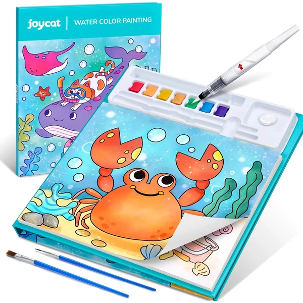
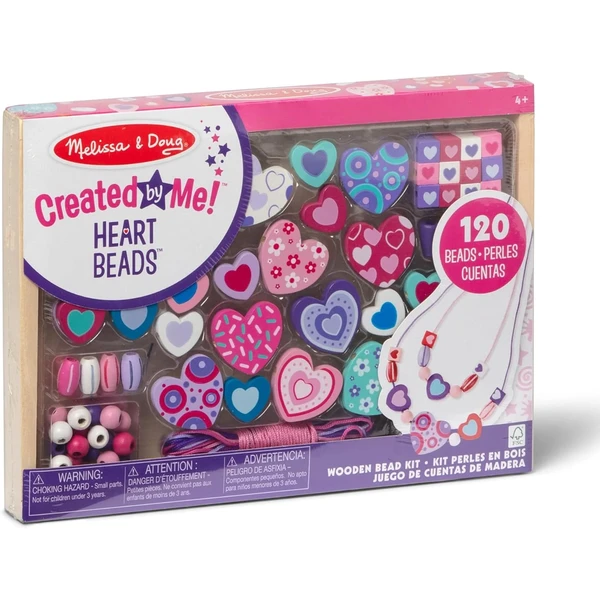
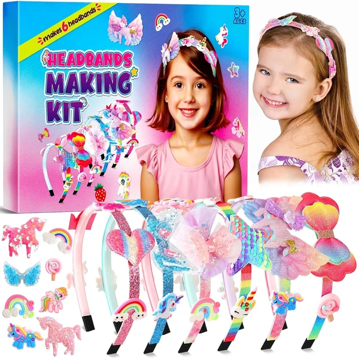
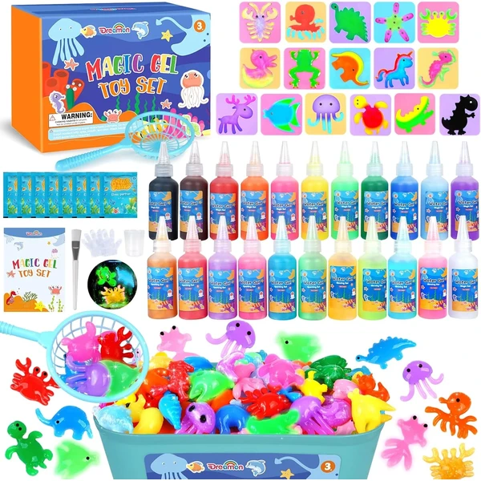

Melissa & Doug Diseña tus Propios Brazaletes
Un kit con 4 pulseras reversibles y más de 100 pegatinas y gemas reutilizables, para diseñar combinaciones distintas una y otra vez sin necesidad de comprar más material.
⭐ ¿Por qué nos gusta?
- ✔ Pulseras reversibles, se pueden rehacer sin límite.
- ✔ Más de 100 pegatinas y gemas incluidas.
- ✔ Fomenta motricidad fina y coordinación mano-ojo.
💬 Lo que más destacan las familias
Lo que más suele gustar es poder rehacer las pulseras una y otra vez sin que se agote el material, así que la actividad no dura solo una tarde. Los niños disfrutan probando combinaciones nuevas cada vez que las deshacen.
Ver en Amazon

JoyCat Libro para Colorear con Acuarelas
Un libro con 20 páginas de temática marina y papel extra grueso, pensado para pintar con acuarelas sin que el color traspase. Cada página se puede arrancar por sus líneas de corte al terminar.
⭐ ¿Por qué nos gusta?
- ✔ Papel extra grueso, el color no traspasa.
- ✔ 20 páginas con temática de animales marinos.
- ✔ Formato compacto, ideal para viajes.
💬 Lo que más destacan las familias
Los compradores valoran especialmente que el papel aguante bien el agua sin arrugarse ni traspasar a la página siguiente. Eso hace que los peques puedan pintar con más libertad sin miedo a estropear el resultado.
Ver en Amazon

JOYIN Imanes de Madera para Pintar
Un kit con 12 imanes de madera de fantasía, paleta de pintura, pincel y pegamento con purpurina, para pintar y luego decorar la nevera con las creaciones terminadas.
⭐ ¿Por qué nos gusta?
- ✔ Las piezas terminadas se pueden exponer como imanes.
- ✔ Incluye pegamento con purpurina para decorar.
- ✔ Materiales sin BPA ni plomo.
💬 Lo que más destacan las familias
Una de las cosas más comentadas es que la manualidad terminada acaba teniendo un uso real en la nevera, en vez de quedarse guardada en un cajón. A los niños les hace mucha ilusión ver su creación expuesta en casa.
Ver en Amazon

Melissa & Doug Cuentas de Madera Corazones
Un set de 120 cuentas de madera con forma de corazón y 5 cordones de colores, guardado en una bandeja de madera, para enhebrar collares y pulseras de amistad.
⭐ ¿Por qué nos gusta?
- ✔ 120 cuentas y 5 cordones de colores.
- ✔ Bandeja de madera para guardar todo ordenado.
- ✔ Desarrolla motricidad fina y coordinación.
💬 Lo que más destacan las familias
Entre los comentarios más habituales aparece lo entretenidos que se quedan enhebrando cuenta tras cuenta, sin que se les acabe el material a mitad de collar. También gusta que puedan regalar lo que hacen, algo que les da mucho orgullo.
Ver en Amazon

Pourbibi Kit de Diademas Unicornio
Un kit para decorar diademas con cintas de colores, lentejuelas y adornos de temática unicornio, usando cinta adhesiva de doble cara en vez de pegamento tradicional para evitar el desorden.
⭐ ¿Por qué nos gusta?
- ✔ Cinta adhesiva en vez de pegamento, sin manchas.
- ✔ Diseños y adornos reutilizables.
- ✔ Resultado final: un accesorio que se puede llevar puesto.
💬 Lo que más destacan las familias
Se repite bastante el comentario de que poder lucir la diadema después le da mucho más sentido a la manualidad. También se agradece que la cinta adhesiva evite el lío de pegamento habitual en este tipo de actividades.
Ver en Amazon

Dreamon Aqua Gelz Set
Un kit con 22 colores de hidrogel y 16 moldes distintos para crear figuras 3D que se solidifican en agua, incluyendo colores nacarados y luminosos que brillan en la oscuridad.
⭐ ¿Por qué nos gusta?
- ✔ 22 colores, incluidos nacarados y luminosos.
- ✔ 16 moldes distintos para crear figuras 3D.
- ✔ Combina ciencia y manualidad en una misma actividad.
💬 Lo que más destacan las familias
Un detalle que aparece una y otra vez es la sorpresa de ver cómo el hidrogel se transforma en figuras firmes dentro del agua. El efecto de las que brillan en la oscuridad suele ser lo que más entusiasma a los niños.
Ver en Amazon